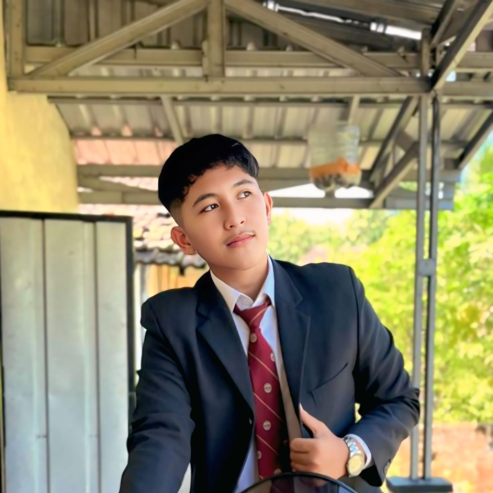

Halo, saya Vernando!
Siswa kelas X SMK, calon Junior Web Developer di Kelas Industri UBIG.
Lihat Proyek SayaTentang Saya
Saya seorang siswa di SMKS Brantas Karangkates kelas 10 pplg 1 yang sedang belajar membangun website dari nol. Saya senang belajar hal baru dan ingin menjadi developer profesional.
Hobi
- Menonton film
- Menggambar
- Mendesain poster
- Bermain game
- Bermain bulu tangkis
Cita-cita
Menjadi Web Developer. Langkah yang saya rencanakan:
- Menuntaskan Kelas Industri dari UBIG di SMKS brantas karangkates sampai Semester 4 dan sampai Lulus Kelas 12
- Magang di perusahaan pengembang ai ataupun aplikasi
- Bekerja sebagai Web Developer
Keahlian
- HTML dasar (sedang dipelajari)
- Mengetik cepat (sedang dipelajari)
- Desain poster dengan Canva
- Dapat memahami pelajaran dengan cepat
- Mudah bekerja sama dengan tim
Jadwal Belajar
| Hari | Waktu | Kegiatan |
|---|---|---|
| Senin | 15.20 - 16.20 | Membaca ulang modul dan memahami materinya |
| Rabu | 19.00 - 21.20 | Mengerjakan tugas praktik dan merangkum |
| Jumat | 19.00 - 20.20 | Merekam video presentasi tugas praktik |